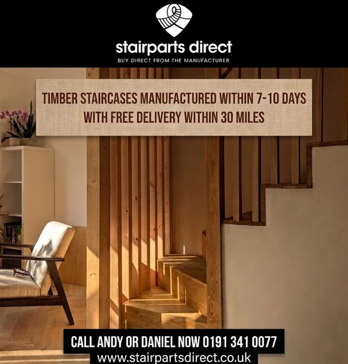
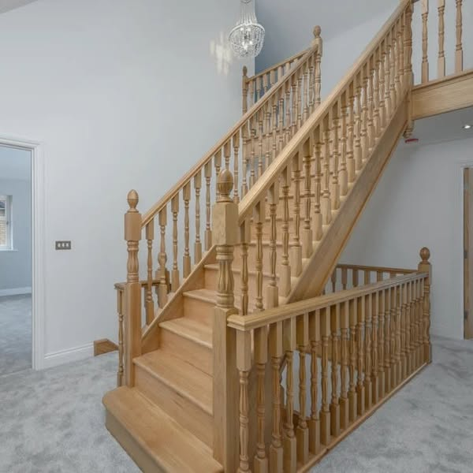
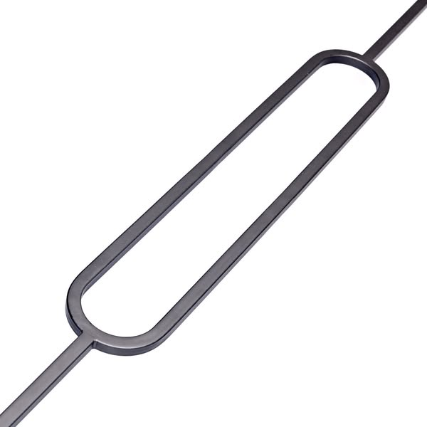
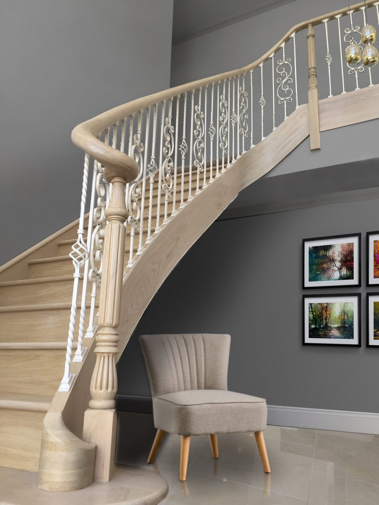
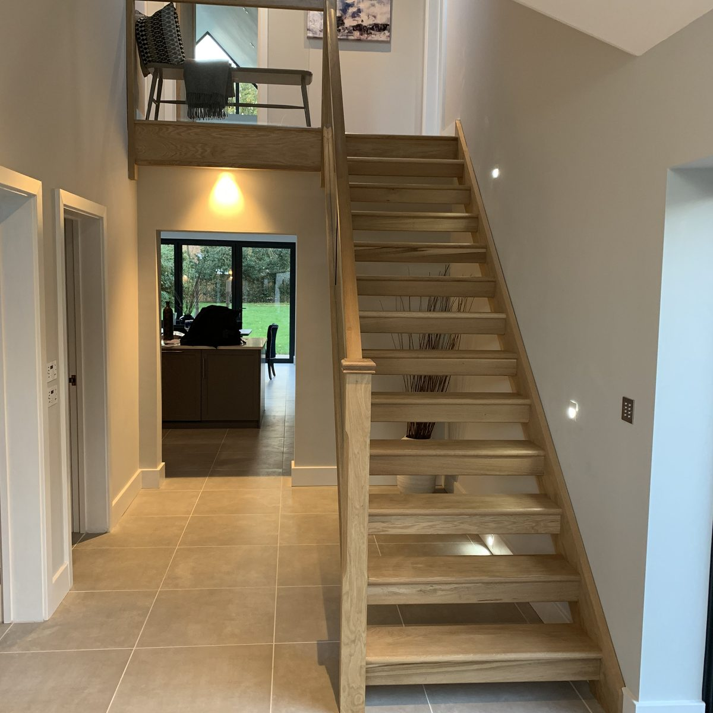
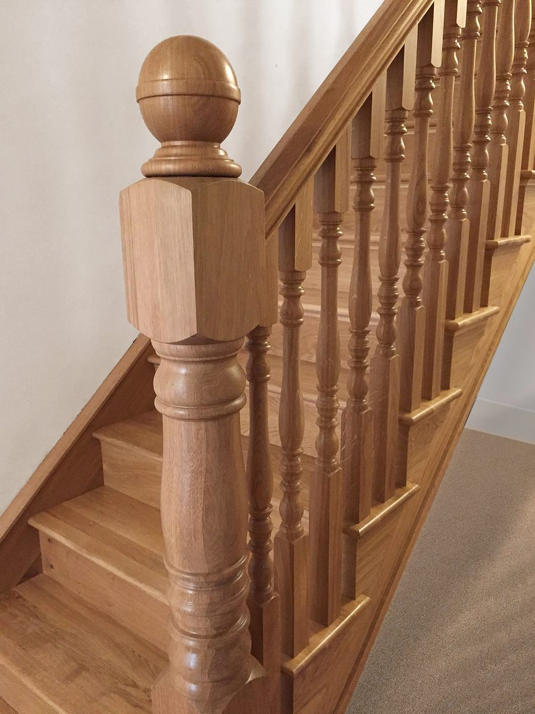
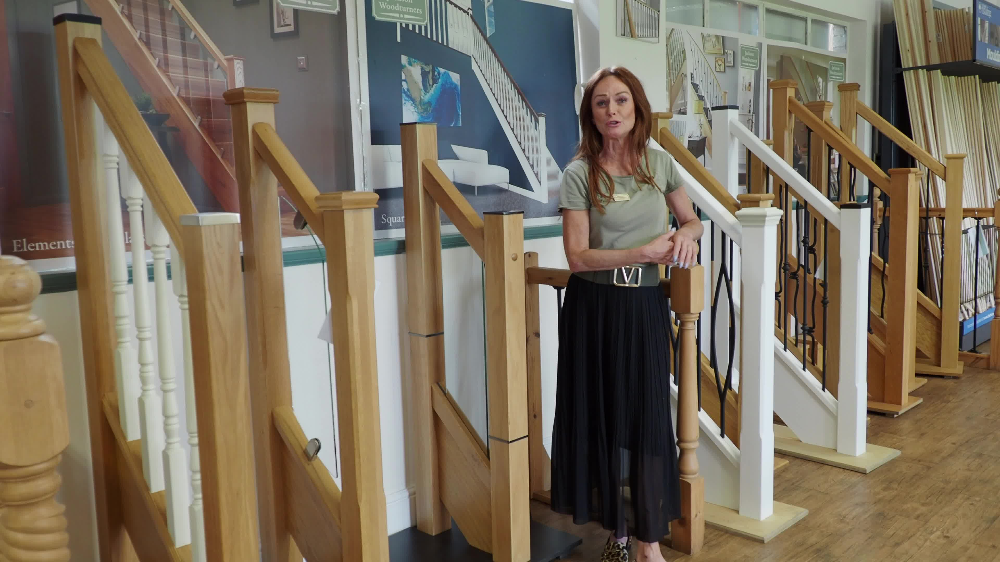
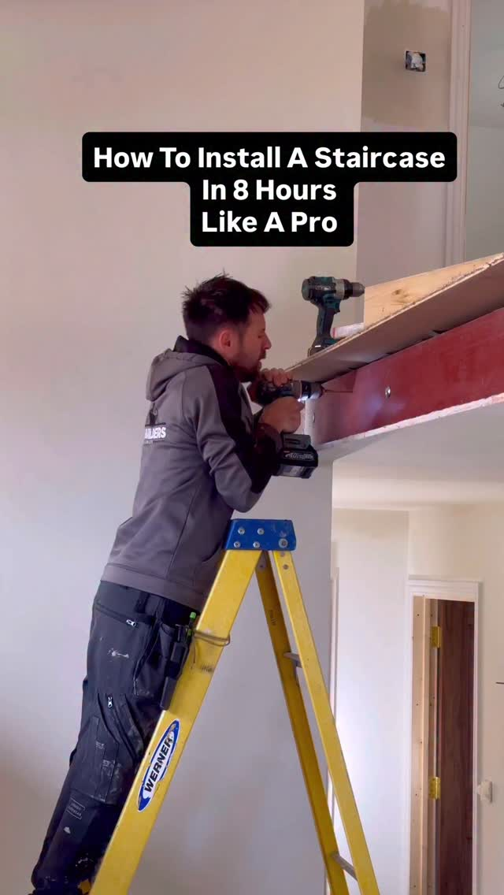
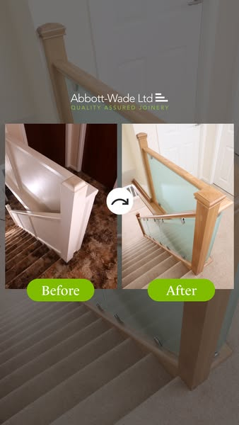

Forty years of staircases, and one spindle in your ads.
You design and make staircases and stair parts in Stanley, County Durham: a family run business with over 40 years behind it, selling to the trade and the public through StairpartsDirect.co.uk. Your online store is better set up than most we see, with a Meta pixel and Conversions API, Trustpilot reviews and a Staircase Builder that prices a staircase in minutes. But the one ad running today is a single metal spindle on a white background, and the factory where it is all made is in none of the ads we viewed. We read your ads, both websites, your Instagram and three UK competitors. This is what we found, what we would make, what it costs and what it should return.
Most manufacturers we look at have no tracking and no way to price online. You have both. stairpartsdirect.co.uk runs a Meta pixel with Conversions API, Google Analytics with enhanced conversions and a Microsoft Ads tag, and its Staircase Builder gives an instant quotation. Meta's Ad Library shows about 15 ads from Stairparts Direct. Of the eight we viewed, seven ran for a month or less and all eight were still images, and the one running now is a spindle cut-out. Your bespoke oak staircases, the highest value work you do, had one week of ads in February.
1
Meta ad running on 3 October 2026: a single metal spindle
~15
ads in total from Stairparts Direct; seven of the eight we viewed ran for a month or less
716
Instagram followers on @stairpartsdirect, with 2 to 9 likes on recent posts
7 to 10
working days to make a staircase at the quickest, as your Staircase Builder page says
What is already strong, and worth building on
Over 40 years of manufacturing, family run, with your own factory, showroom and trade counter at Harelaw Industrial Estate, Stanley.
Your own ranges, designed and made in house, with North East names: Lindisfarne, Bamburgh, Alnwick, Durham and more.
A Staircase Builder on stairpartsdirect.co.uk that gives an instant quotation for six staircase layouts.
Tracking already in place: Meta pixel with Conversions API, Google Analytics with enhanced conversions, a Microsoft Ads tag, and Trustpilot reviews rated Excellent.
Two audiences in one business: joiners and builders buying parts, and homeowners and self-builders buying a whole staircase.
You do not need a new website or a new tool. You need video from the factory floor, ads that run all year, and one campaign each for the trade and for homeowners.
02 · Your Meta ads
Well tracked, rarely on, and never on video.
Your ads run from the Facebook page "Stairparts Direct" (226 followers, linked to @stairpartsdirect). Meta's Ad Library shows about 15 ads, with one running today. We found no Facebook page under the Theresa Spinks name. Here are three.

Your best idea"Planning a new staircase? Design it online in just a few minutes with our Stairbuilder." It ran for a month, then stopped.Ran 8 Jul to 7 Aug 2026

One week"A statement entrance done right. This grand Oak Staircase was designed and manufactured to meet our customer's exact specifications." Your highest value work, shown for seven days.Ran 3 to 10 Feb 2026

Running now"Give your staircase the modern finish it deserves." A product cut-out, with no staircase, no home and no people.Running since 11 Aug 2026
What we found across your ads
1
Short runs do not let Meta learn
Seven of the eight ads we viewed ran for a month or less: 12 to 25 November, 9 to 22 December, 7 to 16 January, 3 to 10 February. Meta needs a steady run to learn who orders and who asks for a quote. Each new burst starts from scratch.
Fix: two always-on campaigns, with new creative added each week rather than new ads started and stopped.
2
No video at all
All eight ads we viewed were still images. Lathes, CNC and oak being finished are made for video, and your factory reel is already one of your best posts on Instagram.
Fix: film the factory, then put the budget behind it.
3
The trade and homeowners get the same message
A joiner reordering spindles and a family planning a new staircase want different things. Right now they see the same ads, when they see any.
Fix: one campaign for joiners and builders, one for homeowners and self-builders that sends people to the Staircase Builder.
Source: Meta Ad Library, United Kingdom, page "Stairparts Direct" (page ID 544548775414318), all ads, and an advertiser search for "Theresa Spinks", checked 3 October 2026. Tracking read from the page code of stairpartsdirect.co.uk on the same day.
03 · Your website
Two websites, and the shop is the stronger one.
theresaspinks.co.uk has your collections, a gallery of over 50 named projects, refurbishment and bespoke turning pages, and a plan upload on every enquiry form. stairpartsdirect.co.uk has the prices, the reviews and the Staircase Builder. These are the changes we would make to theresaspinks.co.uk.
What we saw
Why it matters
Fix
Two different ages
The homepage says "over 40 years in business". The About Us page says "With 30 years experience".
One number, everywhere, and say it first.
The instant quote is on the other site
Your Staircase Builder prices a staircase in minutes, but theresaspinks.co.uk does not mention it. Visitors are asked to phone or fill in a form.
A "Price your staircase" button on the homepage, linking to the Builder.
stairpartsdirect.co.uk shows Trustpilot reviews rated Excellent. theresaspinks.co.uk shows none, and over 50 gallery projects with no video.
Bring the reviews across and add a 30 second film from the factory.



Photos from your own website. Staircases like these, and the factory that makes them, are what we would film.
04 · Your social channels
Posting often, to a small audience.
716
Instagram followers on @stairpartsdirect, from 127 posts
2 to 9
likes on your last 12 posts
9
likes on a hallway transformation, your best recent post
8
likes on "The final touches before it leaves the factory"
You post every two or three days, which is more than most businesses we look at. The pattern in your recent posts:
Finished hallways win. "This staircase transformation has brought this hallway to life" (9 likes, a post shared with another account) did best.
The factory comes second. "The final touches before it leaves the factory", a 115mm Lindisfarne newel post being finished, earned 8.
News posts stall. The bullnose cladding launch, the carpenter's pencils and the hiring post earned 2 or 3 likes each.
What this means for your ads. A small following is not the problem: ads reach joiners and homeowners who have never heard of you. The posts that work, finished staircases and the factory, are the ones to turn into ads.
Source: instagram.com/stairpartsdirect public profile and post data, checked 3 October 2026. The Instagram link on theresaspinks.co.uk goes to this account.
05 · Three UK competitors
Who is selling staircases on Meta, and how.
We searched Meta's Ad Library for staircase and stair parts advertisers. We found none based in the North East, so we picked three UK businesses selling what you sell: stair parts, an online staircase builder, and bespoke staircases. Every figure was checked on 3 October 2026.
Business
Facebook / Instagram
Live Meta ads
What they lead with
Oldest live ad
Theresa Spinks / Stairparts Direct Stanley, County Durham
226 / 716
1 live. ~15 in total
A metal spindle, a glass sale, the Staircase Builder
11 Aug 2026
Jackson Woodturners UK stair parts
2.3K / 1.8K
~17 live. ~39 in total
"The UK's largest selection of stair parts", staff on camera in their showroom
7 Sep 2025
StairBox.com UK, online staircase builder
13.2K / 15.9K
~20 live. ~94 in total
Its StairBuilder, Trustpilot reviews, install videos
Since at least 31 Jul 2026
Abbott-Wade Staircases UK, bespoke, nationwide
3.9K / 3.9K
~35 live. ~120 in total
"Design, manufacture & install bespoke new flights", before and after
Since at least 13 Jul 2026
What the numbers say
Jackson shows the people. Their oldest live ad, running for over a year, is a member of their team talking in their showroom. You have a showroom and a factory too.
StairBox sells its builder. Your Staircase Builder does the same job. It had one month of ads.
Abbott-Wade sells the transformation. The old staircase and the new one, side by side. Your refurbishment work is made for this.
The North East is open. We found no staircase maker advertising to North East homeowners. A family factory in County Durham is a reason to choose you that none of these three can use.
Sources: Meta Ad Library (UK) page views for each business and keyword searches for staircase and stair parts advertisers, 3 October 2026. Ad counts are totals shown in the library and change daily.
06 · What is working in your market
People on camera, useful how-tos, and before and after.
These ads are live now from the competitors above. These are the patterns we would build your campaigns on.

A person in the showroomJackson Woodturners: "Your staircase, made simple: showroom open 6 days, trade prices for all, family service you can trust." Live since September 2025.

Useful to the tradeStairBox: "How To Install A Staircase In 8 Hours Like A Pro". A how-to aimed at joiners and keen DIYers.

Before and afterAbbott-Wade: the old staircase and the new one, side by side, with nothing else to read.
1
Film the factory
Lathes, CNC and oak being finished. None of the competitor ads we viewed showed where the product is made.
2
Show the Builder working
A screen recording of a staircase priced in minutes, then a finished staircase in a home.
3
Before and after
Your refurbishment page already makes the promise. Film it, one hallway at a time.
07 · Twelve videos we would make
Built from your factory, your ranges and your Builder.
Every concept uses something Theresa Spinks already has. Six are built to bring in quotes and orders through ads. Six are built to grow @stairpartsdirect.
Ads that bring enquiries
6 concepts
Ad · factory
Made in Stanley
"Every spindle on this staircase was turned here, in County Durham."
The lathe, the CNC, the finishing bench, then the finished staircase in a home.
Why: none of your competitors is showing a factory.
Ad · builder
Priced in two minutes
"How much is a new staircase? Let's find out."
A screen recording of your Staircase Builder, from measurements to price.
Why: turns curiosity into a quote request you can follow up.
Ad · refurbishment
Keep the stairs, change the staircase
"Your stairs are sound. Your staircase is dated."
A refurbishment before and after: new newels, spindles and handrail.
Why: your refurbishment page already makes this promise.
Ad · trade
For joiners
"Joiners in the North East: this is the trade counter."
The counter, the stock and click and collect, filmed in one take.
Why: your About page says customers return time and time again.
Ad · bespoke
The period spindle
"Got a spindle nobody makes any more? We turn copies."
Copying a spindle from a period property on the lathe, start to finish.
Why: your bespoke turnings page calls these some of your favourites.
Ad · self-build
Self-builders
"Building your own home? Your staircase can be made in as little as 7 to 10 working days."
A staircase from drawing to delivery, for self-builders and small developers.
Why: a high value order with a deadline you can meet.
Organic that builds the audience
6 concepts
Series
One staircase, start to finish
"Day one: the drawing."
A bespoke staircase followed from CAD to delivery.
Why: series bring people back, and the finish doubles as an ad.
Lathe
Watch it appear
"A block of oak becomes a newel post."
Close, slow footage of turning, in real time.
Why: woodturning is made for short video.
Ranges
Which spindle?
"Lindisfarne, Bamburgh or Alnwick? Here is the difference."
Your ranges side by side, explained in 30 seconds.
Why: helps people choose, then order.
Advice
Measure your stairs
"Three measurements you need before you price a staircase."
Floor height, going and width, explained on a real staircase.
Why: sends people to the Builder ready to use it.
Customers
Fitted by your joiners
"Fitted by a joiner, made by us."
Reposts of customers' installs, with their permission.
Why: a joiner has already sent you one, and it is the proof homeowners look for.
Team
Meet the family
"A family business, 40 years in."
The people behind the counter, the lathe and the phones.
Why: people buy from people they recognise.
08 · The plan, month by month
Film the factory, then run two campaigns all year.
Week 1
Audit and tidy
Check the pixel and Conversions API events, count Staircase Builder quotes as a conversion, fix the years and the footer on theresaspinks.co.uk, and link it to the Builder.
Weeks 2 to 3
Two filming days
The lathe, the CNC, finishing, the trade counter, a refurbishment before and after, and the team.
Week 3
Two campaigns live
One for joiners and builders, one for homeowners and self-builders pointed at the Staircase Builder. Both always on.
Month 2
Add, do not restart
New videos each week into the same campaigns. We switch off what is not bringing quotes and orders and put the budget behind what is.
Month 3
Review on quotes and orders
We report Builder quotes, enquiries, staircase orders and parts sales, and set the spring budget on those numbers.
Every month you get: 20 to 25 edited videos, two filming days, all Meta ads written, built and managed, Instagram posting support, and a one-page report on quotes, enquiries and orders. You keep every video.
09 · Price and return
What it costs, and what it takes to pay for itself.
Content and managed ads
£1,950
a month, three month minimum, then rolling
Two filming days and 20 to 25 videos a month
Meta ads written, built and managed, always on
Staircase Builder quotes tracked as conversions in week one
Instagram posting support
Monthly report on quotes, enquiries and orders
Ad spend
£700
a month suggested to start (about £23 a day), paid by you directly to Meta
Not marked up. You can see every pound in your own account.
We would use your existing ad budget better before asking you to raise it.
How many staircases pay for it
Total monthly cost: £2,650. We work this out on what you keep from an order, not on its price. On 3 October 2026 your Staircase Builder priced an oak straight flight (oak strings, treads and risers, four turned oak newels, no balustrade) at £2,594 plus VAT, so that row is your own price. The others are our assumptions, and we have assumed you keep 35% after timber and time. The calculator below lets you put in your own figures.
Order
Price
You keep at 35%
A month to cover £2,650
Bespoke staircase Our assumption, please correct
£4,000
£1,400
2
Oak straight flight, four oak newels A price from your own Staircase Builder, excl. VAT
Two scenarios on £700 a month of ad spend, from month three once the new videos are running, counting staircase orders only. The average staircase of £4,000, the cost of an enquiry and the share that order are our assumptions; your own figures replace them in week one. Parts orders from the trade campaign come on top.
Month three onwards
Cost per enquiry
Enquiries
Become staircases
Staircases won
Work you keep
After our cost
Steady about 2 staircases a month
£35
20
10%
2
£2,800
+£150
Target about 3 staircases a month
£25
28
12%
3.4
£4,704
+£2,054
Try it with your own numbers
This starts on our assumptions. Change anything you know better, such as your real job values, your margin or how many enquiries you usually turn into work, and the figures below update straight away. Nothing you type is saved or sent anywhere.
A mix of new staircases and refurbishments.
£
After materials, labour and other direct costs.
%
What Meta charges, on average, for each enquiry.
£
Out of every 100 enquiries, how many turn into paid work.
%
Paid by you, directly to Meta, each month.
£
Content and managed ads, per month.
£
0
enquiries a month
0
staircases won a month
£0
of work booked
£0
you keep from that work
£0
total monthly cost
£0
left after our cost, every month
Being straight with you. These are scenarios, not promises. Nobody can guarantee what an ad will return before it runs. What we can promise is that every enquiry is tracked from the ad to the sale, so after three months you will know exactly what each pound brought in, and you can decide on facts.
10 · Who we are, and next steps
A Newcastle team that makes the videos and runs the ads.
Most ad agencies cannot film, so they run the same banners for months. Most video companies cannot run ads. We do both, which is why we can test new creative every week instead of every quarter.
16.9x
monthly revenue in 60 days for Northumberland Candle Company, from ads built on fresh video
7.8x
blended return on ad spend for the same client
87M+
views on content we have made for one North East business
Jay Williams and Anya Davey, the founders of Fusion Creative. We film and run ads for businesses across the North East from Newcastle, about half an hour from Stanley. We would be the people in your factory with the camera, and the people you call about the numbers. Our team of editors turns every filming day into finished videos, and either of us can be on camera when a video needs a presenter.
Next steps
A 20 minute chat at the factory to check the numbers above against your real ones.
If they stack up, tracking is checked and both campaigns go live within three weeks.
Then fresh video from the factory every week, through winter and into the spring building season.

Posting often, to a small audience.
You post every two or three days, which is more than most businesses we look at. The pattern in your recent posts:
What this means for your ads. A small following is not the problem: ads reach joiners and homeowners who have never heard of you. The posts that work, finished staircases and the factory, are the ones to turn into ads.
Source: instagram.com/stairpartsdirect public profile and post data, checked 3 October 2026. The Instagram link on theresaspinks.co.uk goes to this account.